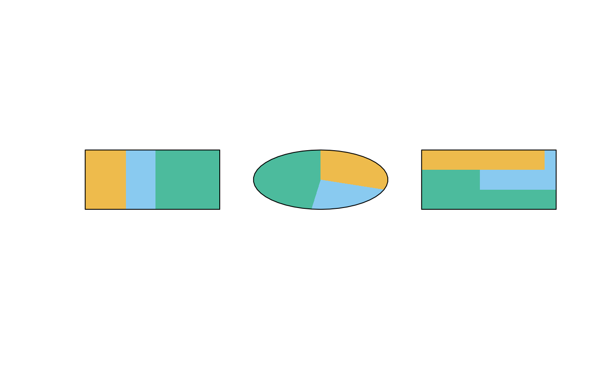
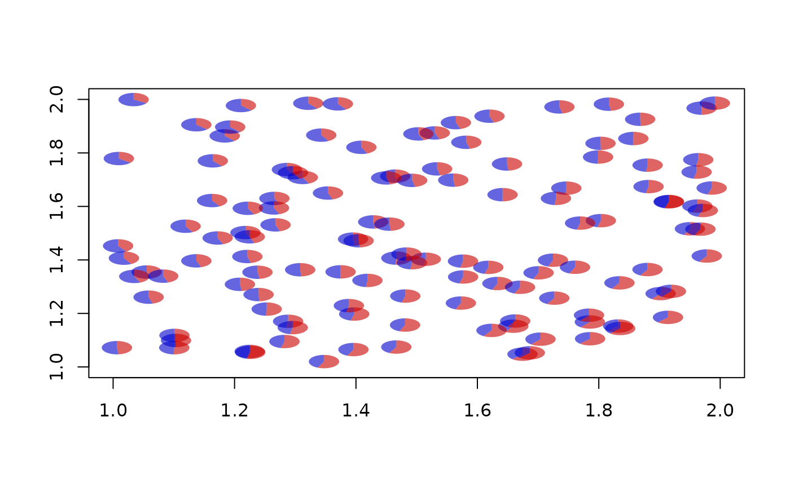
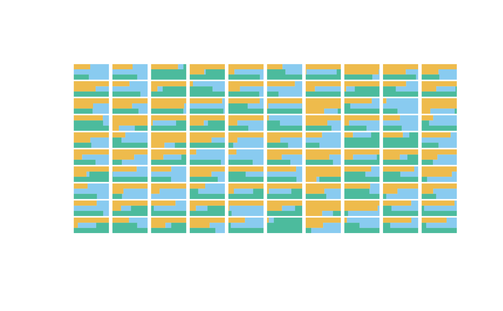

simplePie.RdThe simplePie function draws a simple pie chart at specified coordinates with specified width, height and color. The simpleRug function draws a corresponding rug plot, while simpleBoxpie creates a "rectangular pie chart" that is considered to be better legible than the regular pie.
simplePie(x, y, w, h, v, col, res = 100, border = NA) simpleRug(x, y, w, h, v, col, border = NULL) simpleBoxpie(x, y, w, h, v, col, border = NA, grid = 3)
| x, y | coordinates at which to draw the plot |
|---|---|
| w, h | width and height of the plot |
| v | sizes of the slices |
| col | colors of the slices |
| res | resolution (number of polygon edges in a full circle) |
| border | color of the border. Use NA (default) or NULL for no border |
| grid | boxpie only: the grid over which the areas are distributed. Should be roughly equal to the number of areas shown. |
simplePie() draws a pie chart with width w and height h at coordinates (x,y). The size of the slices is taken from the numeric vector v, and their color from the character vector col.
# demonstration of the three widgets plot.new()par(usr=c(0,3,0,3)) x <- c(7, 5, 11) col <- tmodPal() b <- "black" simpleRug(0.5, 1.5, 0.8, 0.8, v=x, col=col, border=b)simplePie(1.5, 1.5, 0.8, 0.8, v=x, col=col, border=b)simpleBoxpie(2.5, 1.5, 0.8, 0.8, v=x, col=col, border=b)col <- c("#cc000099", "#0000cc99") for(i in 1:125) { x <- runif(1) + 1 y <- runif(1) + 1 simplePie( x, y, 0.05, 0.05, c(x,y), col) }